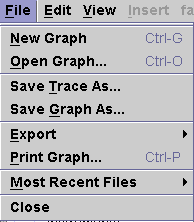
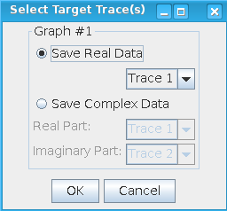

File Menu
The File menu provides functions related to opening, printing, saving, and exporting graphs.

The following menu items are included:
New Graph - creates a new graph in the Waveform Graphs Tool.
Open Graph... - opens a previously saved graph into the Waveform Graphs Tool.
Note The Signal Analyzer supports waveform files with one or more columns. For
example, a waveform file that contains the I and Q data in two columns. It also supports white
space as well as semicolon delimiters.
Save Trace As... - saves the trace data in ASCII, binary, or enhanced ASCII format.
Note
When you select ASCII Format File on the Save Trace As
dialog, the format of the file to which the trace data is saved into is determined
according to the following cases:
- If there is only one non-scatter trace on graph window, the trace is saved into a
non-scatter file. The format of a non-scatter file is as in the following example:
4123.354328 4123.452092 4123.634873 4123.709343 - If there is only one scatter trace on graph window, the trace is saved into a scatter
file. A scatter file is formatted as in the following example:
# scatter # x y 1.0 4123.354328 2.0 4123.452092 4.0 4123.634873 5.0 4123.709343 - If there are multiple traces on the graph window, the following dialog opens:

In this dialog:- If you select Save Real Data: the selected non-scatter trace is saved into a non-scatter file, and the selected scatter trace is saved into a scatter file.
- If you select Save Complex Data, two traces are saved into an
I/Q data file. The format of this I/Q data file is as in the following example:
# I/Q data # I Q 0.0000000000000000 0.5000000000000000 0.0122706142614561 0.4998494093481021 0.0245338371637090 0.4993977281025862 0.0367822817998337 0.4986452283393451
Save Graph As... - saves the selected (active) graph to a file.
Export - exports the selected graph, all displayed graphs, or the entire Signal Analyzer window to a file.
Print Graph... - prints the contents of the focused graph.
Most Recent Files - lists up to four files that have been used recently.
Close - closes the Signal Analyzer.